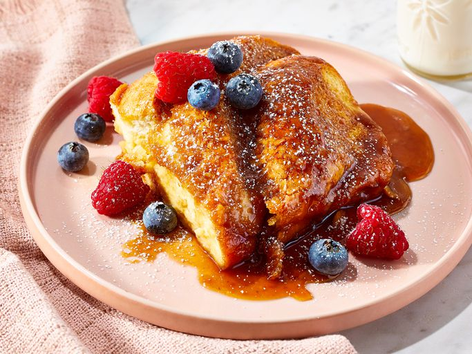

Baked French Toast

Description
Baked french toast is lightly spiced, slightly sweet, perfectly soft in the middle, and has the must delicious buttery cinnamon sugar top. You can make this right now or prepare it in advance for a stress-free breakfast or brunch!
Ingredients
- French bread
- Milk
- Half and half
- Eggs
- Vanilla
- Cinnamon
- Butter
- Brown Sugar
- Corn Syrup
Steps
- Arrange the bread slices in a buttered baking dish.
- Beat the eggs, milk, cream, vanilla, and cinnamon together and pour over the bread.
- Refrigerate overnight.
- Combine the remaining ingredients in a saucepan and heat until bubbling.
- Pour the brown sugar mixture over the bread.
- Bake in the preheated oven.
Home Page